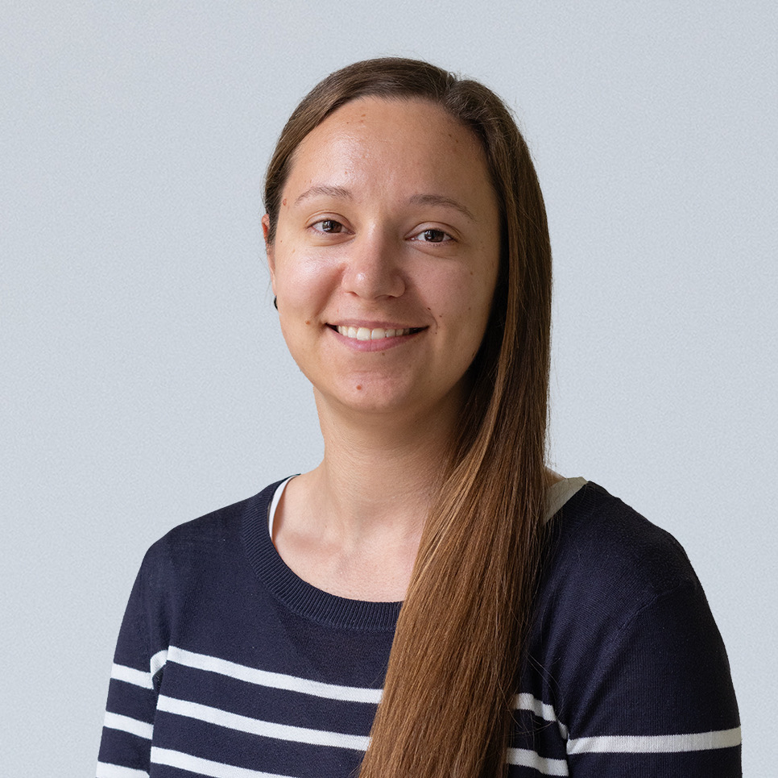

Data Analyst · Madrid
Data Analyst
Turning raw data into decisions.
I build tools that make numbers speak — from AI-powered financial systems to conversational analytics.

About me
I'm a data analyst with a background in HR and payroll, currently completing a Master's in Data Analysis & AI at ISDI. After nearly a decade working with people and processes, I'm making a deliberate pivot toward data — bringing with me a strong sense of structure, attention to detail, and deep understanding of how organisations work.
I build tools where AI and data meet, and I'm open to new opportunities where that combination creates real impact.
Experience & Education
Work experience
2026 — Present
Global Payroll Lead
Seedtag
Leading global payroll operations at one of Europe's leading contextual advertising platforms.
Global payroll · Leadership2021 — 2025
Senior Payroll & Benefits Specialist
Fever
Senior specialist managing payroll and benefits in a high-growth global events & entertainment company.
Payroll · Benefits · HRIS2017 — 2021
HR & Payroll
Zankyou Weddings
HR and payroll roles in an international wedding platform — first professional steps into people operations.
HR · Payroll · People opsEducation
2025 — Present
Master in Data Analysis & Artificial Intelligence
ISDI · Madrid
Specialisation in machine learning, NLP, and AI-integrated data products. Building a portfolio of applied projects.
ML · NLP · LLM · Python · SQL2015 — 2019
Master in Management
ICN Business School
Generalist management programme covering strategy, finance, and organisational behaviour.
Management · Strategy · FinanceSkills
Projects
01
Wrapped Analytics
Conversational assistant to explore Spotify listening history via natural language. Text-to-code architecture — the LLM generates Python that runs locally on the real dataset.
↗02
Financial Analysis AI
Automated, parametric financial analysis system for any ticker vs. benchmark. Generates quantitative KPIs and an AI executive summary with a single notebook run.
Contact
Let's work
together.
Open to full-time roles and freelance projects.